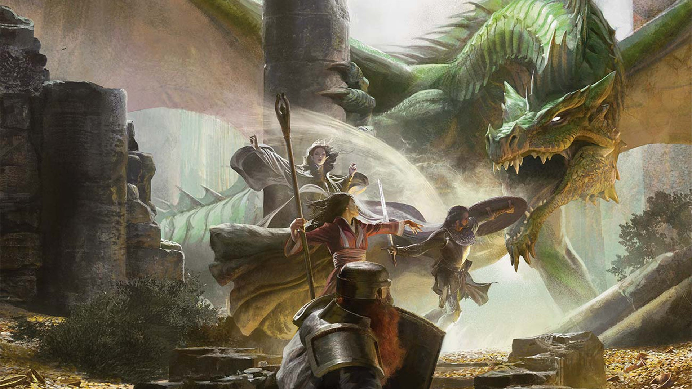

The following details the entire story of The Lost Mine of Phandelver as scribed by the High Wizard of Neverwinter. It consists of three parts, the prologue which the reader must understand as that sets the stage for all the events to come next, the events of the Lost Mine in the year 1491 D.R. (For those unfamiliar, D.R. stands for Dale Reckoning, the year when the great standing stone was raised by my people, the Cormanthyr elves, in the northern Dalelands.), as well as an epilogue and an account of the many plots and intrigues to come. Years are mentioned in most of the prologue, and all the names of various characters are taken from historical annexes. The prologue mainly plays out as a set of years and corresponding events, and the epilogue as a brief glimpse of things to come, the main expedition details the adventures of Rev. Flint Rockseeker, Lady Iris Vicaria, Magus Quarion And-vang, Miss Seraphina Thumbleton and two warriors simply called Hammer and Robin that led to the discovery of the Mine.